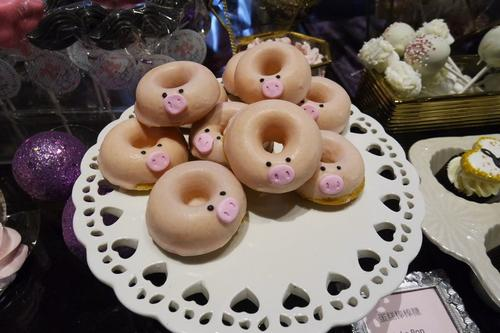
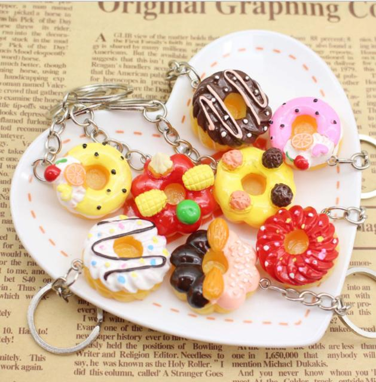
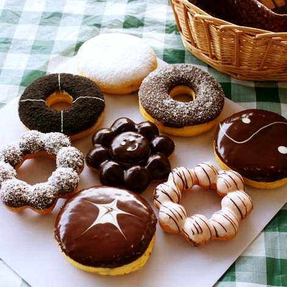

Donuts CAKE
Doughnut, also known as donuts and donuts, is a kind of sweet food mixed with flour, sugar, cream and eggs and then fried. The two most common shapes of doughnuts are hollow rings, or closed doughnuts with cream or egg paste in the middle of the dough.
Doughnuts are still the most popular dessert in the United States. They are sold in any pastry shop or fast food restaurant. From five-year-old children to 75 year old people have a consistent love for it. In Asia, doughnuts are mainly used as snacks, but in the United States, many people use doughnuts as their breakfast staple, and even set up "doughnut day".

Practice 1
Ingredients: 200g high gluten flour, 25g egg liquid, 4G yeast, 110g milk, 25g sugar and 2G salt.
1. Heat the milk to about 40 ℃, dissolve the yeast, let it stand for a few minutes, mix all the raw materials evenly, add oil, knead into dough, knead for more than ten minutes until the expansion stage.
2. Put the dough bag in a warm place and ferment it to twice the size. Take it out and let it vent. Relax for 10 minutes. Roll the dough into a square cake about 1cm. Print the doughnut shaped cake embryo on it with a mold. Put it into the fermentor for secondary fermentation for 40 minutes (set temperature 35 and humidity 65). The specific condition depends on the fermentation state, that is, press it gently with your fingers. If it doesn't rebound, press it, It means that the fermentation is not in place yet. If it rebounds quickly, it means that the fermentation has gone too far. Only when it bounces slowly can it be regarded as good fermentation.
3. Oil to 70% to 80% heat (at 180 ℃ ° C) , into the oil pot, after the intense reaction, the reverse side, and then fry for about 30 seconds, and then the reverse side can start to filter the oil.

Practice 2
Ingredients: 200g high gluten flour, 9g dry yeast powder, 2G salt, 130cc milk, 53g high gluten powder, 8g milk powder, 21g egg, 2G salt, 31G sugar, 4cc milk, 30g cream
1. Mix material a evenly and knead until the dough is bright and not sticky;
2. The dough was fermented for 90 minutes for the first time;
3. Stir material B except cream evenly and add it into the dough fermented in practice 2;
4. Add the cream in material B to the dough in method 3 and continue to knead (STIR);
5. Knead until the dough is strong and bright;
6. After taking out the dough, roll it into a 1-1.5cm thick crust with a rolling pin, then wrap it in plastic wrap and let it rest for 10-15 minutes;
7. Press out the doughnut shape with the doughnut model (I don't have it here, I will use the appropriate size of the mouth and bottom of the bowl), hold the opposite side with my hand and put it on the plate, and finally ferment for 40 minutes（ Students without fermentation boxes can find foam boxes, put a bowl of hot water in them, put the doughnuts into them and cover them, so that they can also play the role of fermentation.
8. Put it in hot oil about 180 degrees, one side for 30 seconds, deep fry until both sides are golden, take off and drain the oil.
